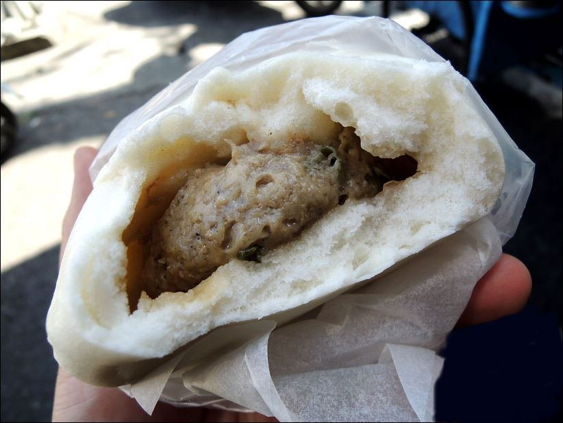
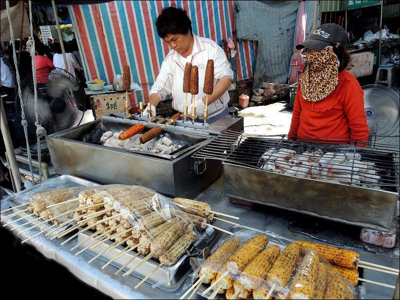

| 台南 | 高雄 | 屏東 |
屏東：
一說到屏東當然就是要去吃一下屏東特殊的肉粽，那裏的肉粽究竟有多特別呢~
嘿嘿不說你不知道，那裏的肉粽跟我們端午節吃的肉粽有著天壤之別的差別喔，
屏東肉粽又稱南部粽，南部粽的特色就是他是要醬汁的!!!他不像其他客家粽一樣是用粽葉包好直接拿起來吃，
他是把米飯用的濕濕黏黏的"勾勾"的然後配上特調醬汁，吃起來還別有風味呢!
首先! 第一家：阿明肉包
有多家新聞報紙以及電視節目推薦，牆上也有看到總統夫人周美青及其他簽名，
潮州阿明肉包原為潮州鎮圓環以藍色三輪車擺攤賣肉包的無攤名路邊攤一直到搬遷到店面後，
才正式命名為阿明肉可以看到以前的藍色三輪車停放在店門口，
看到保溫箱內熱騰騰的包子饅頭猶豫著要買什麼吃吃，原本的口味不算多，
只有蛋黃肉包、白饅頭和黑糖饅頭供選擇，現在又多了幾種口味，
大概一個肉包跟手掌一樣大 ，阿明肉包的豬肉餡是使用生肉加入青蔥與調味料拌勻，
味道非常棒餡料帶有一點點的肥肉，不油膩，還帶有鮮美的肉汁豬肉餡搭配鹹蛋黃還真的蠻特別的，
所以愛吃蛋黃的一定會愛上這一味。

(圖片來源：https://goo.gl/kHiwUc)
第二家：家傳香烤玉米
位於正老牌冷熱冰旁的烤玉米也非常有名，是一家民國38年就有的老店，
有白玉米和黃玉米兩種去買的時候如果沒有特別告知要哪一種，
所以店家會烤白玉米，看到一根根玉米在炭火上不斷的旋轉烘烤，
然後老闆不斷的重複在玉米上頭塗抹著沙茶醬料看起來就超好吃的啊！
而且又超香的，而且厚厚的沙茶醬料非常夠味，白玉米粒粒分明，而且還很有嚼勁的。

(圖片來源：https://goo.gl/drRa9d)